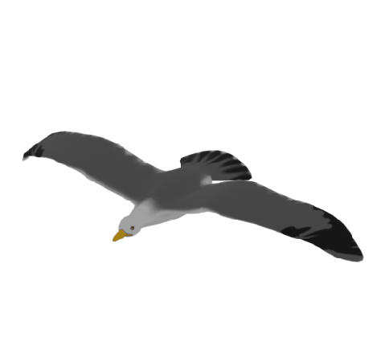
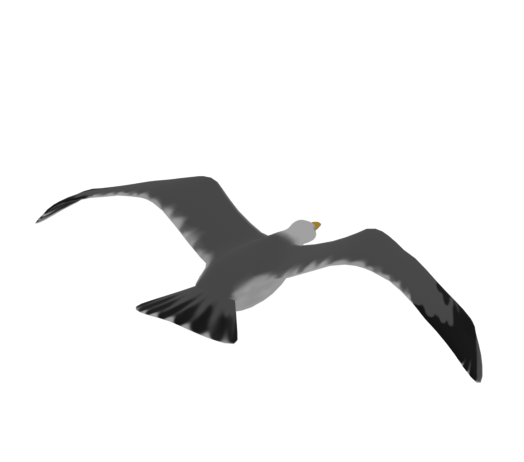
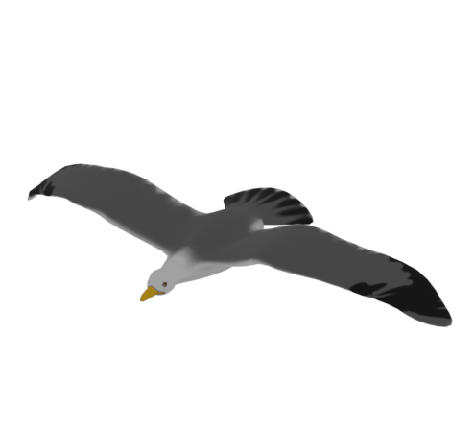
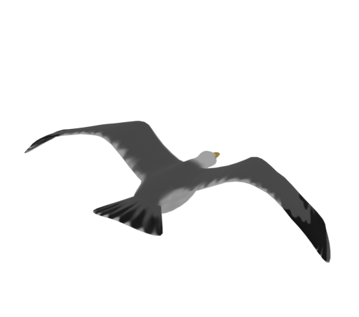
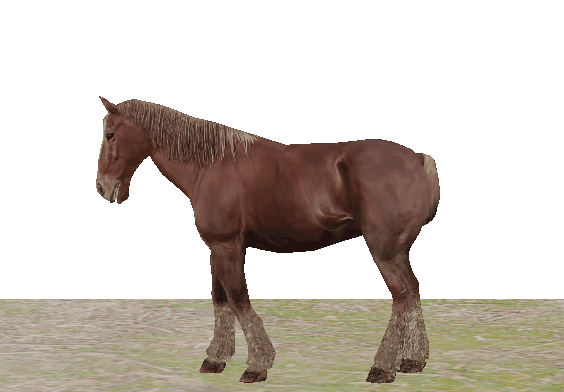
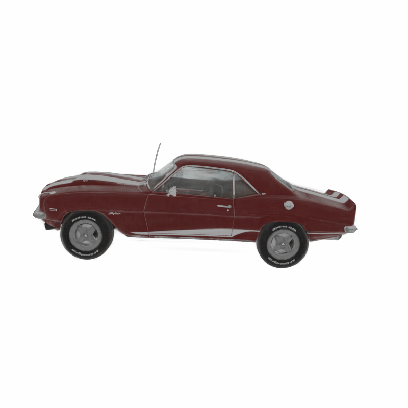

Source
View 1
View 2
+
Static 3DGS
=
Dynamic 3DGS

Source
View 1
View 2
+
Static 3DGS
=
Dynamic 3DGS
We present Gaussian See, Gaussian Do, a novel approach for semantic 3D motion transfer from multiview video. Our method enables rig-free, cross-category motion transfer between objects with semantically meaningful correspondence. Building on implicit motion transfer techniques, we extract motion embeddings from source videos via condition inversion, apply them to rendered frames of static target shapes, and use the resulting videos to supervise dynamic 3D Gaussian Splatting reconstruction. Our approach introduces an anchor-based view-aware motion embedding mechanism, ensuring cross-view consistency and accelerating convergence, along with a robust 4D reconstruction pipeline that consolidates noisy supervision videos. We establish the first benchmark for semantic 3D motion transfer and demonstrate superior motion fidelity and structural consistency compared to adapted baselines.
Source
Target
Pipeline Overview. (1) Structured Multiview Motion Inversion. We extract motion embeddings from the source using the slerp interpolation from the two nearest achor points. (2) View-aware Semantic Motion Transfer. We use the motion embeddings to generate supervision for the motion transfer process, and then (3) 4D Consolidation. We apply the supervision onto the target shape to introduce actual motion
A given motion sequence is temporally composed with a synthesized one. Meaning a part of the motion is given, for example the beginning and the end, and the rest is completed by the network. In the examples below, given parts are shaded in gray, and generated parts are full color. Note how the network generates diverse results for the same inputs, and the completed motion naturally matches the given parts even when they are very different.
Warmup to Warmup
Walk to Breakdance to Walk
(Model trained on Breakdance)
Same Motion Prefix
Motion Expansion
Motion composition can also be done spatially by using selected joints as input, and generating the rest. Below we show control over the upper body. The motion of the upper body is determined by a reference motion unseen by the network (Warm-up), and the model synthesizes the rest of the joints according to the learned motion motifs (Walk in cirlce). In the composed result the top body part performs a warm-up activity, and the bottom body part walks in a curvy line.
Upper Body Reference
Training Sequence
Composed Result
@inproceedings{raab2024single,
title={Single Motion Diffusion},
author={Raab, Sigal and Leibovitch, Inbal and Tevet, Guy and Arar, Moab and Bermano, Amit H and Cohen-Or, Daniel},
booktitle={The Twelfth International Conference on Learning Representations (ICLR)},
url={https://openreview.net/pdf?id=DrhZneqz4n},
year={2024}
}